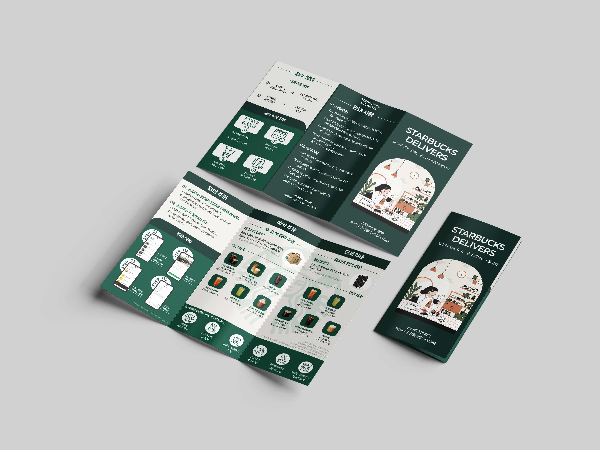
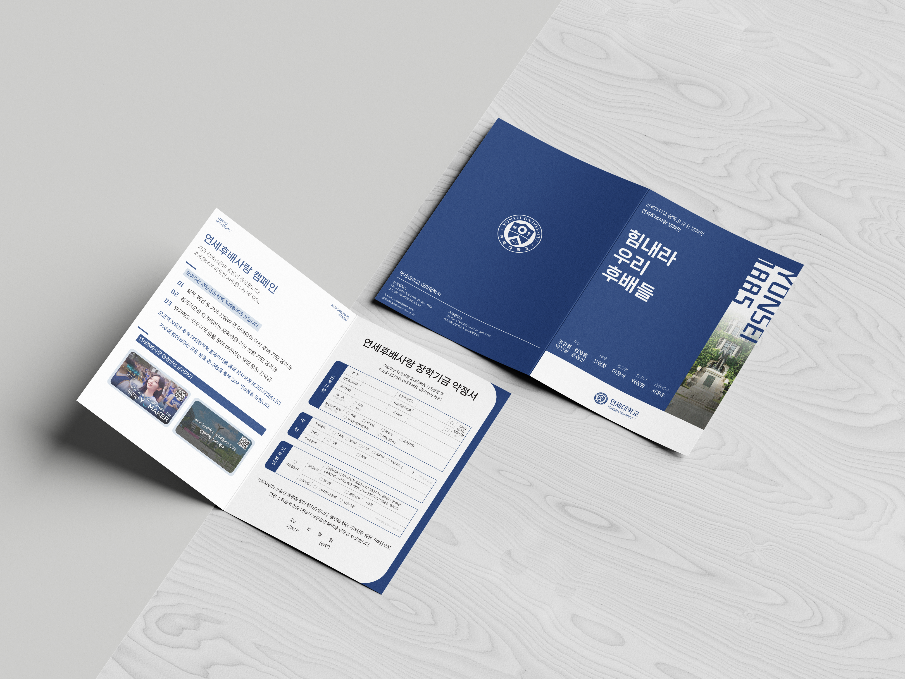

정보량이 많은 내용을 한눈에 이해할 수 있도록 구조화하고, 각 프로젝트의 성격에 맞는 레이아웃을 설계했습니다.
IMAGE PROJECT · EDITORIAL DESIGN
LEAFLET
BI-FOLD · TRI-FOLD · 2026
같은 인쇄 매체 안에서 서로 다른 목적의 정보를 구조화하고,
브랜드에 맞는 시각 언어로 정리한 두 개의 리플렛 작업입니다.


01
PROJECT INFO
Overview
4 Days
Editorial / Leaflet Design
Reference Research · Layout · Visual Design
Illustrator85%
Layout · Vector Graphics · Typography
Photoshop15%
Mockup · Image Editing
01 · Starbucks Delivers — 3단 리플렛
02 · Yonsei Campaign — 2단 리플렛
02 / DESIGN APPROACH
읽히는 구조를 먼저 만들고,
브랜드의 리듬을 더했습니다.
STARBUCKS
DELIVERS
DELIVERS
#1A3A33
#F4F1EC
#8A9A86
YONSEI
CAMPAIGN
CAMPAIGN
#15346D
#FFFFFF
#C8D5E2
#000000
03 / PROJECT 01 · TRI-FOLD
Starbucks
Delivers.
일반 주문·예약 주문·단체 주문처럼 정보량이 많은 내용을 단계별로 빠르게 탐색할 수 있도록 정리했습니다. 텍스트 중심 초기안에서 아이콘과 카드 구조를 활용한 최종안으로 발전시켰습니다.
PROCESS
과정 이미지는 한 장씩 넘기지 않고, 변화가 보이도록 나란히 배치했습니다.
01 / INFORMATION LAYOUT
박스에서
박스에서
아이콘 중심
구조로.
초기에는 네모 박스로 정보를 구분했지만 텍스트에 비해 면적이 커 보였습니다. 여러 배치를 시도한 뒤, 단체 주문과 예약 주문의 차이가 빠르게 보이도록 아이콘과 단계형 카드 구조로 정리했습니다.
02 / RESERVATION GUIDE
같은 정보,
같은 정보,
더 빠른 인지.
예약 주문 절차는 아이콘의 크기와 설명 위치를 반복해서 조정했습니다. 최종안에서는 번호·아이콘·설명을 한 묶음으로 구성해 네 단계가 한눈에 보이도록 정리했습니다.
03 / VISUAL CONCEPT
캐릭터 협업
캐릭터 협업
시도에서
최종 비주얼로.
피드백을 바탕으로 캐릭터와의 협업을 가정한 시안도 제작했습니다. 이후 전체 리플렛의 분위기와 통일성을 고려해 카페 내부 일러스트를 중심으로 한 방향을 최종 선택했습니다.
04 / ORDER GUIDE
STEP 번호와
STEP 번호와
화면의 관계를 정리.
휴대폰 화면과 설명을 여러 방식으로 배치해본 뒤, STEP 번호가 먼저 보이고 그다음 화면과 설명을 읽도록 최종 레이아웃을 정리했습니다.
04 / PROJECT 02 · BI-FOLD
Yonsei
Campaign.
2단 리플렛은 큰 면을 한 번에 구성해야 해 여러 방향을 비교하며 레이아웃을 발전시켰습니다. 레퍼런스 탐색과 후보 비교를 반복한 뒤, 캠페인의 신뢰감과 가독성을 우선한 방향으로 정리했습니다.
PROCESS
레퍼런스를 찾고 적용한 뒤, 가독성과 프로젝트 성격을 기준으로 방향을 다시 선택했습니다.
01 / REFERENCE STUDY
먼저 방향을 넓게 탐색.
사선 분할과 학교 컬러 중심의 정보 구조를 각각 참고했습니다. 레퍼런스는 방향을 비교하기 위한 작은 단서로만 보여주고, 이후 시도한 디자인과 분리해 정리했습니다.
REFERENCE 표기가 있는 이미지는 방향 탐색을 위해 참고한 외부 시각 자료입니다.
02 / APPLIED EXPLORATION
레퍼런스를 바탕으로 직접 시도.
사선 레이아웃은 텍스트를 안정적으로 배치하기 어려워 중단했고, 네이비와 화이트의 큰 면을 중심으로 다시 구성했습니다. 로고와 면 분할 방식도 여러 방향으로 비교했습니다.
03 / ALTERNATE DIRECTION
다른 스타일도 끝까지 실험.
인물과 원형 그래픽을 활용한 편집디자인 방향도 시도했습니다. 새로운 가능성을 확인했지만 정보 구성의 안정성과 캠페인 성격을 고려해 기존 방향을 더 발전시키기로 했습니다.
04 / CONTENT REFINEMENT
정보 위계를 더 가볍게 정리.
내부의 큰 박스는 텍스트 양에 비해 시각적으로 무거워 보였습니다. 박스를 덜어내고 번호와 구분선을 중심으로 다시 정리해 가독성과 여백의 균형을 맞췄습니다.
05 / TAKEAWAY
같은 리플렛이어도,
정보의 목적에 따라 설계 방식은 달라집니다.
스타벅스에서는 단계와 기능을 빠르게 찾는 구조를, 연세대에서는 신뢰감과 안정적인 정보 위계를 우선했습니다. 두 작업을 통해 인쇄물에서도 시각적 인상과 정보 전달 사이의 균형이 중요하다는 점을 경험했습니다.